Playlists
Playlists
Songs gathered for a season or a theme, in the order they are meant to be heard.
Tap a picture to play it here, or play the whole playlist on YouTube. New playlists appear here as they are added to our YouTube channel.
Sleep Scripture Songs: Gentle Bible Songs for Bedtime
11 songs, in playlist order. Play the whole playlist on YouTube ›
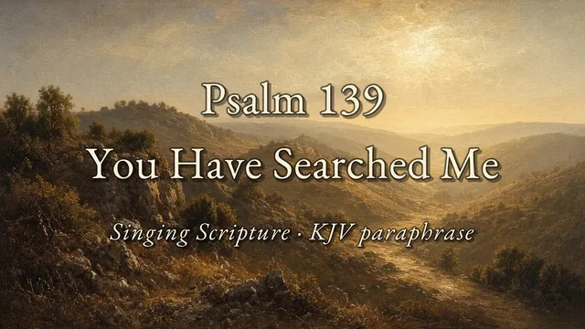
Adapted from Psalm 139:1 (KJV)
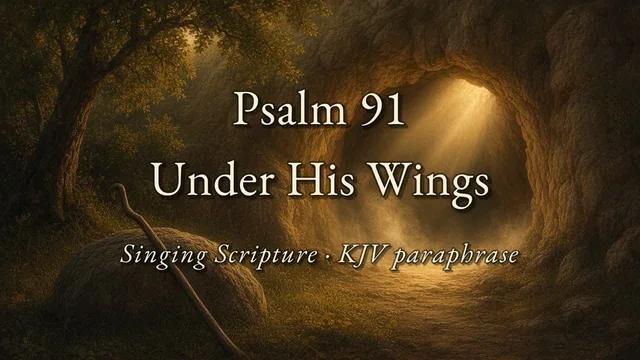
Psalm 91:4 (KJV)
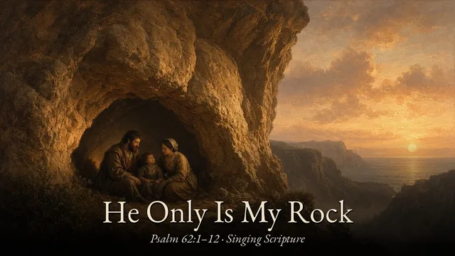
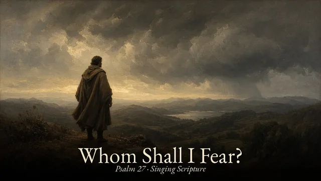

Isaiah 40:6 (KJV)
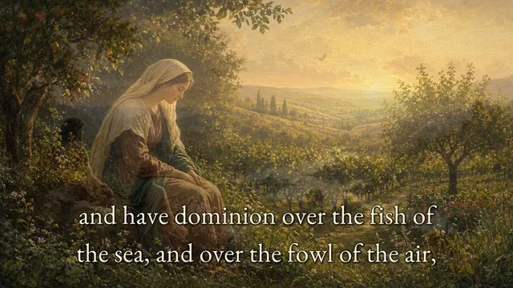
Genesis 1:26 (KJV)
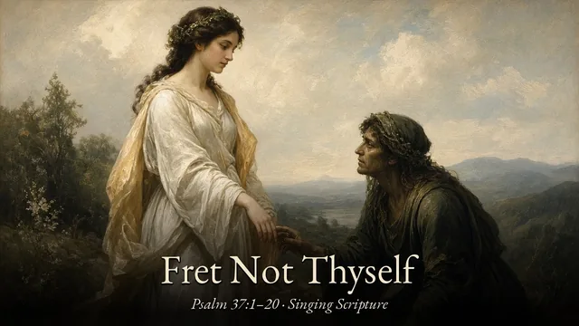
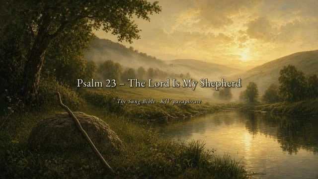
Psalm 23:1 (KJV)

Adapted from 1 Corinthians 13:13 (KJV)

Matthew 6:9 (KJV)

Adapted from Psalm 121:1 (KJV)
Quiet Christmas Scripture Songs: Peaceful Songs for the Season
10 songs, in playlist order. Play the whole playlist on YouTube ›

Isaiah 9:6 (KJV)

Isaiah 11:1 (KJV)

Adapted from Luke 2:8 (KJV)

Luke 2:7 (KJV)
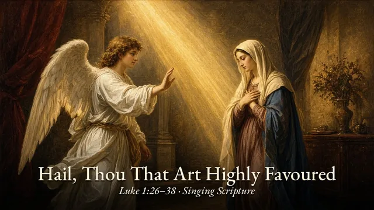
Luke 1:28 (KJV)

Isaiah 7:14 (KJV)
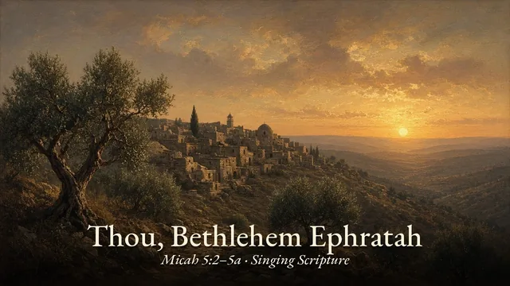
Adapted from Micah 5:2 (KJV)


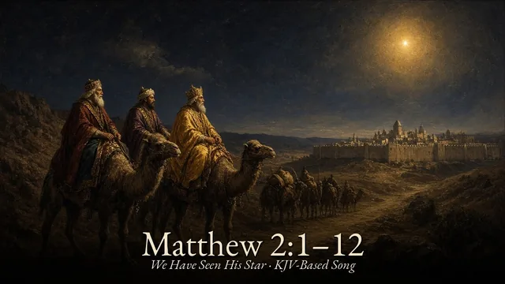
God's Love Scripture Songs: Nothing Can Separate Us
7 songs, in playlist order. Play the whole playlist on YouTube ›

Adapted from Romans 8:35–39 (KJV)
Isaiah 40:6 (KJV)
Genesis 1:26 (KJV)
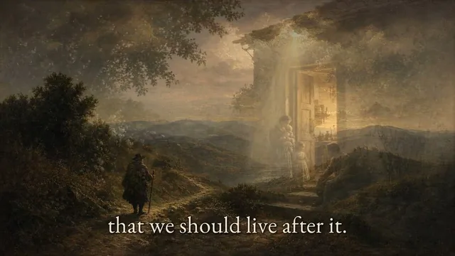
Adapted from Romans 8:12 (KJV)
Adapted from 1 Corinthians 13:13 (KJV)
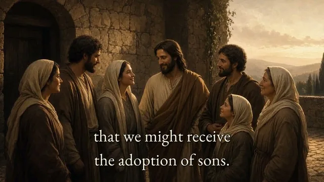
Galatians 4:5 (KJV)
Matthew 6:9 (KJV)
Evening Psalms Scripture Songs: Peaceful Psalms for Night
4 songs, in playlist order. Play the whole playlist on YouTube ›
Comfort Scripture Songs: Psalms for Hard Days
6 songs, in playlist order. Play the whole playlist on YouTube ›
Romans Scripture Songs: No Condemnation in Christ
2 songs, in playlist order. Play the whole playlist on YouTube ›
John Scripture Songs: The Word Made Flesh
6 songs, in playlist order. Play the whole playlist on YouTube ›

Adapted from John 1:10 (KJV)
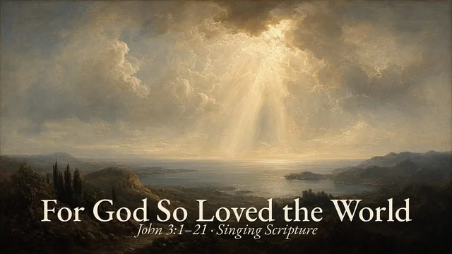
John 3:16 (KJV)
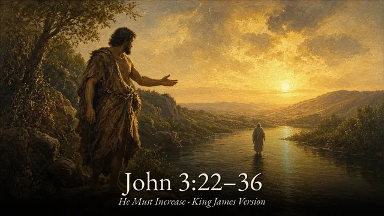
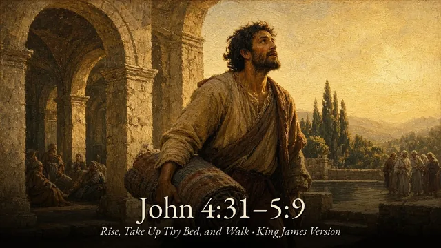
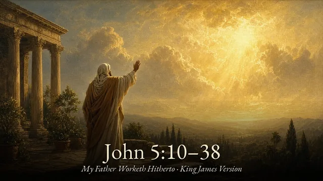
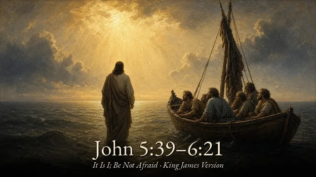
Luke Scripture Songs: The Christmas Story in Luke
6 songs, in playlist order. Play the whole playlist on YouTube ›
Matthew Scripture Songs: The Birth and Teaching of Jesus
10 songs, in playlist order. Play the whole playlist on YouTube ›
Isaiah Scripture Songs: Comfort, Hope and the Coming King
9 songs, in playlist order. Play the whole playlist on YouTube ›
Isaiah 7:14 (KJV)
Isaiah 9:6 (KJV)

Isaiah 9:12 (KJV)
Isaiah 11:1 (KJV)
Isaiah 40:6 (KJV)
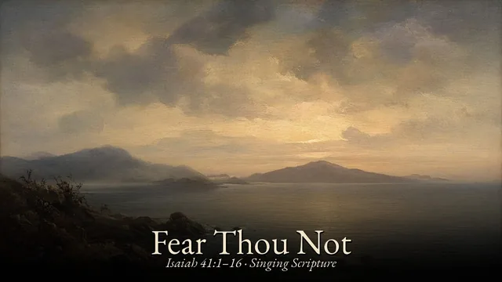
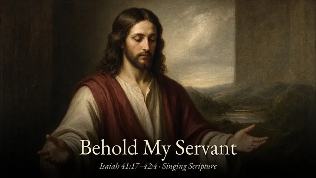
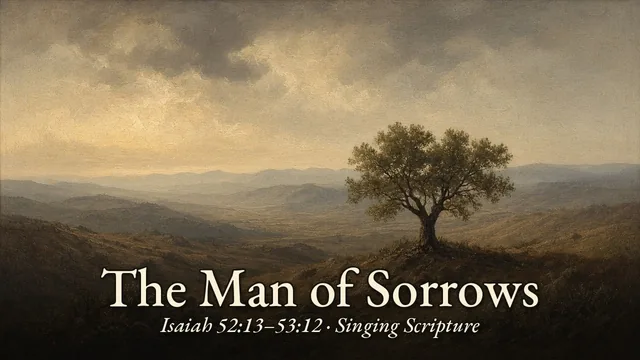
Adapted from Isaiah 53:3 (KJV)
Proverbs Scripture Songs: Trust in the Lord
2 songs, in playlist order. Play the whole playlist on YouTube ›
Psalms Scripture Songs: Psalm 23, 91, 121, 139 and More
10 songs, in playlist order. Play the whole playlist on YouTube ›
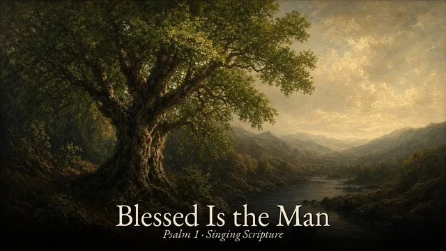
Psalm 23:1 (KJV)
Psalm 91:4 (KJV)
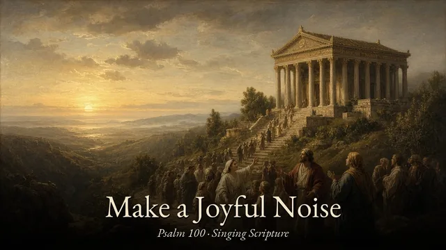
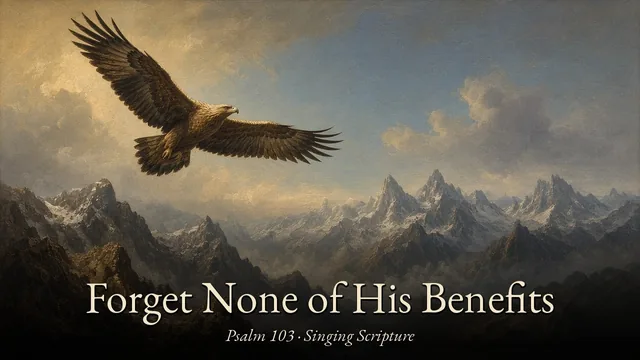
Adapted from Psalm 121:1 (KJV)
Adapted from Psalm 139:1 (KJV)
Joshua Scripture Songs: Be Strong and of a Good Courage
2 songs, in playlist order. Play the whole playlist on YouTube ›
Christmas Scripture Songs: The Birth of Jesus
18 songs, in playlist order. Play the whole playlist on YouTube ›
Isaiah 7:14 (KJV)
Isaiah 9:6 (KJV)
Isaiah 11:1 (KJV)
Adapted from Micah 5:2 (KJV)
Isaiah 40:6 (KJV)
Luke 1:28 (KJV)

Luke 1:45 (KJV)

Luke 2:7 (KJV)
Adapted from Luke 2:8 (KJV)

Adapted from John 1:10 (KJV)
Galatians 4:5 (KJV)
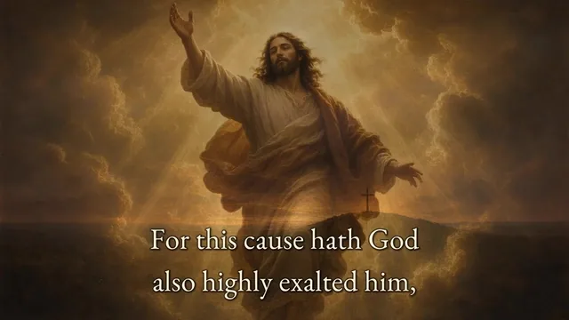
Adapted from Philippians 2:9 (KJV)

Adapted from Hebrews 1:2 (KJV)